#261 James Bond 07 - Sean Connery - Diamantenfieber
Alternativ: Diamonds Are Forever
Auszeichnungen: für 1 Oscars nominiert
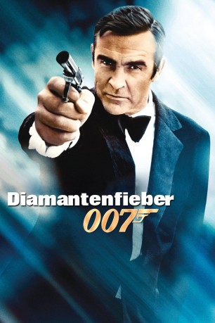 
 IMDB-Wertung: 6.7 / 10
IMDB-Wertung: 6.7 / 10  Metascore: 59
Metascore: 59 
Große Mengen Diamanten verschwinden, ohne auf dem internationalen Markt wieder aufzutauchen. James Bond wird in einen Schmugglerring infiltriert, um der Sache nachzugehen. Die Spur führt nach Las Vegas und zu keinem Geringeren als Bonds Erzfeind Ernst Stavro Blofeld.
Jahr: 1971
Dauer: 120 Minuten
FSK: 16
Land: England Studio: United ArtistsTonspuren: AAC2.0 - ,
Untertitel: Englisch, , , Französisch, Deutsch, , , , ,
Auflösung: 1080p (1920×818) Größe: 17305 MB
Genre: Action, Abenteuer, Thriller
Regisseur: Guy Hamilton
Drehbuch: Richard Maibaum, Tom Mankiewicz, Ian Fleming
Soundtrack: John Barry
Darsteller:
- 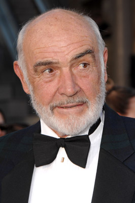 Sean Connery als James Bond
- Jill St. John als Tiffany Case
- 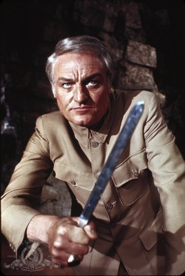 Charles Gray als Blofeld
- Lana Wood als Plenty O'Toole
- 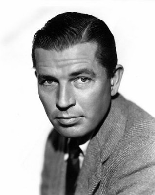 Bruce Cabot als Saxby
- Bruce Glover als Mr. Wint
- 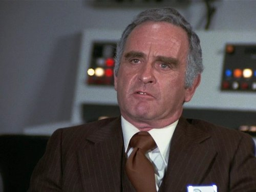 Norman Burton als Leiter
- 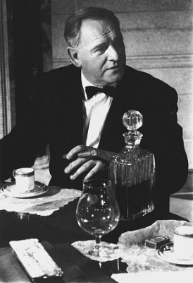 Bernard Lee als 'M'
- 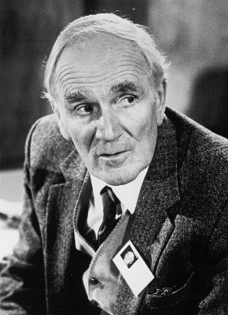 Desmond Llewelyn als 'Q'
- 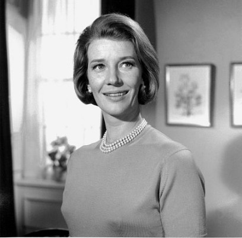 Lois Maxwell als Moneypenny
- 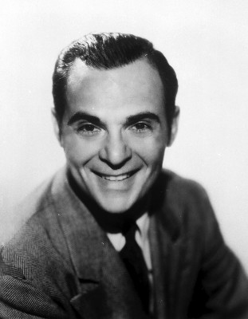 Marc Lawrence als Slumber Inc. Attendant
- 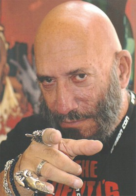 Sid Haig als Slumber Inc. Attendant
- Ed Bishop als Klaus Hergersheimer , uncredited
- Gary Dubin als Boy , uncredited
- Constantine Gregory als Aide to Metz , uncredited
- Debbie Letteau als Girl on the Corner , uncredited
- Valerie Perrine als Shady Tree's Acorn , uncredited
- 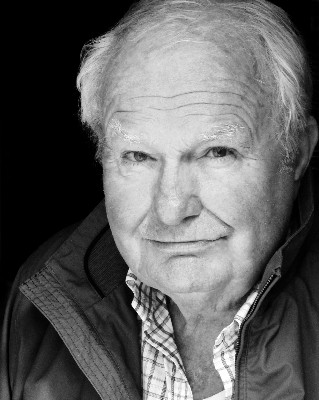 Shane Rimmer als Tom , uncredited
- Jimmy Dean als Willard Whyte
- Putter Smith als Mr. Kidd
- Joseph Fürst als Dr Metz
- Leonard Barr als Shady Tree
- Margaret Lacey als Mrs. Whistler
- Joe Robinson als Peter Franks
- David de Keyser als Doctor
- 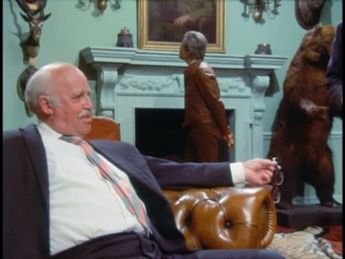 Laurence Naismith als Sir Donald Munger
- David Bauer als Mr. Slumber
- 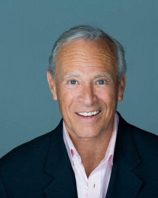 Ray Baker als Helicopter Pilot , uncredited
 Nicky Blair als Doorman , uncredited
Nicky Blair als Doorman , uncredited- 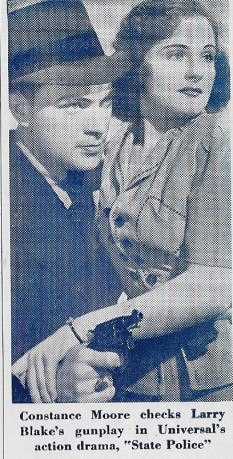 Larry J. Blake als Water Balloon Game Barker-Operator , uncredited
- Ed Call als Maxie , uncredited
- George Lane Cooper als SPECTRE Agent , uncredited
- Dick Crockett als Crane Operator , uncredited
- Catherine Deeney als Welfare Worker , uncredited
- Clifford Earl als Immigration Officer , uncredited
- Mark Elwes als Sir Donald's Secretary , uncredited
- Brinsley Forde als Houseboy , uncredited
- David Healy als Vandenburg Launch Director , uncredited
- Karl Held als Agent , uncredited
- Leroy E. Hollis als Las Vegas Sheriff , uncredited
- Bill Hutchinson als Moon Crater Controller , uncredited
- Janos Kurucz als Aide to Metz , uncredited
- Lola Larson als Bambi , uncredited
- Frank Mann als Moon Crater Guard , uncredited
- Connie Mason als Woman at Whyte House , uncredited
- 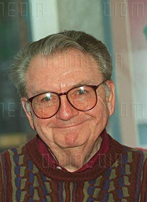 Don Messick als Announcer at Circus Circus , uncredited
- Burt Metcalfe als Maxwell , uncredited
- Johnny Miller als Gunman , uncredited
- Terence Mountain als 1st Guard , uncredited
- Frank Olegario als Man in Fez , uncredited
Datei: X:\7+mehr(A-Z)\007 James Bond\James Bond 07 - Sean Connery - Diamantenfieber (1971, FSK16, 1920x818).mkv seit 15.02.2015
Festplatte: HD Collection-7+mehr(A-Z)+Person
 Es gibt insgesamt 28 Filme in der Gruppe '7+mehr(A-Z)\007 James Bond'
Es gibt insgesamt 28 Filme in der Gruppe '7+mehr(A-Z)\007 James Bond'